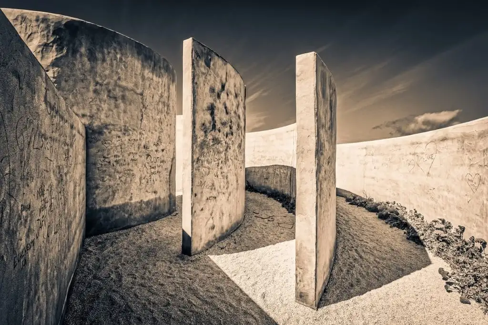

La Prisión de la Libertad.

«Me preocupa con creciente intensidad la idea de que la así llamada realidad no es más que el piso bajo, por no decir la casa del portero, de un enorme edificio con innumerables pisos hacia arriba y, seguramente, también hacia abajo».
Esta obra de Michael Ende se compone de un conjunto de cuentos de temática fantástico-metafísica en torno a ciertos problemas humanos tan profundos como el paso del tiempo y, como señala el título, la libertad y, en particular, ese informe y extraña monstruo que llamamos realidad.
La faceta de Ende como escritor de fantasía no requiere absolutamente ningún tipo de presentación, aunque, quizás, al encontrarse lejos de una adaptación cinematográfica o de una serie de Netflix o de alguna plataforma similar que suele explotar cualquier recurso para mantener su cuota de mercado, resulte algo lejano o incluso antiguo para el público actual, aunque existe una reedición de este libro de 2022.
Me exaspera leer a gente que critica la obra de Ende por ser escapista, fantástica o infantil. En este caso ninguno de los cuentos resulta «infantil» (si no es que toda literatura no constituye una gran infantilidad), sino que abordan desde la «plena» madurez (caso de que tal cosa exista), enigmas cuyo carácter paradójico e incomprensible alimentan aquella necesidad metafísica de la que hablaba Kant sin necesidad de apelar a la plúmbea sombra de las religiones.
El primero de ellos, «La meta de un largo viaje», recorre la vida de una persona que se encuentra en un cuadro un lugar que le estremece y por el que estará dispuesto a todo para, por así decir, hacerlo real, es decir, habitable.
La transferencia desde el plano artístico a un lugar auténtico se le revela a través de un singular encuentro en Venecia con un anciano judío llamado Tubal.
Dios creó el paraíso y creó al hombre. Como luego quitó el paraíso al hombre, este se creó el mundo para vivir en él. Y todavía está creándolo. (p. 60).
Hay una similitud significativa entre este cuento y una reflexión que aparece en el último cuento:
Hay seres que sin saber bien por qué se sienten sin raíces en este mundo. Lo que los demás llaman realidad les parece un espejismo, un sueño confuso y a menudo angustioso. Se sienten condenados a vivir en este mundo como si se tratara de un exilio en tierra hostil. Con nostalgia incurable añoran otra realidad que creen recordar como una patria lejana, sin poder formular nada concreto sobre ella. (p. 188).
Es la misma nostalgia que se refleja en la gran obra de Ende, La Historia Interminable, una trémula oquedad, una fisura que solo los libros, en la medida en que reflejan de algún modo ese espacio imaginario, pueden confortar.
Quien no haya pasado pasado nunca tardes enteras delante de un libro, con las orejas ardiéndole y el pelo caído por la cara, leyendo y leyendo, olvidado del mundo y sin darse cuenta de que tenía hambre o se estaba quedando helado…
Quien nunca haya leído en secreto a la luz de una linterna, bajo la manta, porque Papá o Mamá o alguna otra persona solicita le ha apagado la luz con el argumento bien intencionado de que tiene que dormir, porque mañana hay que levantarse tempranito…
Quien nunca haya llorado abierta o disimuladamente lágrimas amargas, porque una historia maravillosa acababa y había que decir adiós a personajes con los que había corrido tantas aventuras, a los que quería y admiraba, por los que había temido y rezado, y sin cuya compañía la vida le parecería vacía y sin sentido…La Historia Interminable,
p.12.
Como dije al principio, todos los cuentos giran en torno a esta cuestión. «El paseo de Borromeo Colmi», junto con el siguiente «La casa en las afueras», abordan el problema de la realidad desde un punto de vista borgiano, es decir, indescifrable o chocante (de iocare – jugar). En el primero de ellos los protagonistas descubren un pasillo en el cual, cuanto más se avanza, más se disminuye de tamaño, y en la que un horizonte de luz verdosa parece revelar otra dimensión o realidad que los protagonistas se arriesgan a buscar. Como si se tratara de aquella paradoja de Zenón realizada por el arquitecto barroco, Colmi, se busca elaborar, a partir de un pasaje apócrifo de Góngora ni más ni menos, una topografía imposible pero real:
Si entiendo bien esta idea de Góngora, según la cual para la comprensión de la realidad se necesita además de los datos mismos, también la conciencia cognoscitiva que los capte, no será muy arriesgado concluir que la consistencia de una realidad dada está en función de la consistencia de una conciencia dada. Es cosa sabida que esta última no es igual en todos los seres humanos ni en todos los pueblos, por lo tanto podrá suponerse que en diferentes lugares del mundo existen realidades diferentes, incluso que en un mismo lugar puede haber varias realidades. (p. 69).
La casa en las afueras trata una cuestión aledaña pero importante sobre ontología que ha acompañado a los seres humanos desde su origen: el problema del mal. Ende aborda este tema a partir de una casa en la que parece no existir ningún interior salvo para determinados agentes nazis que parecen poder escabullirse dentro de ella sin que los protagonistas sean capaces de averiguar cómo. La diferencia del problema intrínseco a la construcción de cualquier sistema que pretenda reflejar lo real, ende concluye este relato con una conclusión laminadora:
Quizá el misterio del mal consiste exclusivamente en que no tiene misterio alguno. (p. 97).
«Sin duda algo pequeño» aborda de forma cómica el descubrimiento de una geografía inmensa en el interior de un vehículo romano. Se trata de una oda a la polimórfica ciudad de Roma y sus habitantes, de Italia en general donde residía Ende y que parece, en ocasiones, la patria misma de la magia.
Las catacumbas de Misraim cambian de tercio llevando a cabo una reflexión sobre el sentido de la libertad. El protagonista logra escapar a su monotonía y descubrir el funcionamiento real, lo que hoy en día se denominaría las «cloacas del sistema», e iniciar una revolución que es fríamente detenida por unos tiranos que dicen conceder los deseos del pueblo de las sombras que habita en las catacumbas. Y es que las paradojas de la realidad, que no deja de ser una construcción subjetiva para Ende, repercuten en el núcleo mismo de esa subjetividad, que nuestra tradición filosófica denomina libertad. Esos paralogismos que jocosamente elaborara Kant en su Crítica la razón pura cambiarían drásticamente de sentido si fueran vistos como una obra cómica escrita por un irónico y algo resentido profesor jubilado.
Es el cuento donde mejor se refleja esa solidez oscura en la que reside nuestra pretendida conciencia.
Notas de Max Muto afronta de nuevo la trágica condición del viajero, es decir, de todos nosotros, que ya hemos perdido toda capacidad de determinar cuál es la causa originaria de nuestras acciones. El protagonista tiene la oportunidad de regresar al fin por la cadena de las causas hasta la resolución inicial que le condujo a su situación. Sin embargo con sabiduría elige proseguir su viaje sin principio ni fin conocido en un infinito océano de horizontes. Como si se tratara de un Randolph Carter en la ignora Kadath de aquel otro gran soñador, el protagonista llega a una ciudad imposible donde lo enigmático se torna de una sólida consistencia.
«La prisión de la libertad» constituye un extraordinario cuento en el que se refleja la inanidad de la voluntad en relación con aquel término que mencionamos anteriormente denominado libertad. Para escapar de un pacto con el demonio el protagonista se enfrenta a un palacio circular repleto de puertas ante las que debe decidirse por abrir una. Después de múltiples y continuas penalidades ante el impedimento de tomar una decisión, pues todas las puertas le parecen iguales, va descubriendo como estas desaparecen a medida que consigue perder completamente el interés por liberarse. Este planteamiento que habría hecho las delicias de Sexto Empírico, conduce a una epoché o abandono absoluto que permite escapar al protagonista de su prisión. El dilema metafísico plasmado es planteado magistralmente por Ende en apenas un puñado de páginas.
Termina el libro con «La leyenda de Indicavía», un cuento verdaderamente trágico en el que el protagonista busca el Mundo de los Verdaderos Milagros para al final, después de múltiples penalidades, encontrarse a sí mismo como guardián de aquella puerta y llegar al otro lado. Y es que puede que el principal obstáculo para la realización de ese mundo que obstinadamente tildamos de fantástico seamos siempre nosotros mismos. Pero es que por desgracia nosotros no somos ni podemos ser aquello que Ende reclamaba: un libro. Tan solo Bastian. Por eso solo nos queda leer.
P.D. La portada de la edición es de Araceli Sanz. Refleja un momento del libro. Es una ilustradora infantil de larga trayectoria y la verdad es que me parece bastante buena. Las ilustraciones juveniles e infantiles suelen ser de excelente calidad y es una pena que no se valoren lo que merecen.
La prisión de la libertad
La prisión de la libertad, Michael Ende: Desvelando los barrotes de la realidad.
Publicado originalmente en PortalEdu. Texto e imágenes conservados de la publicación original.